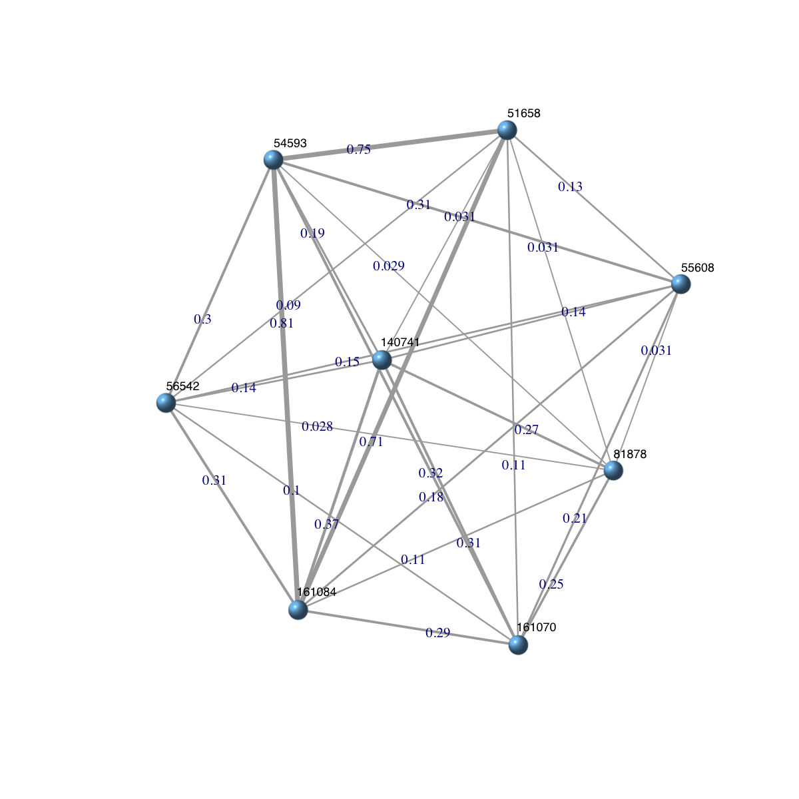
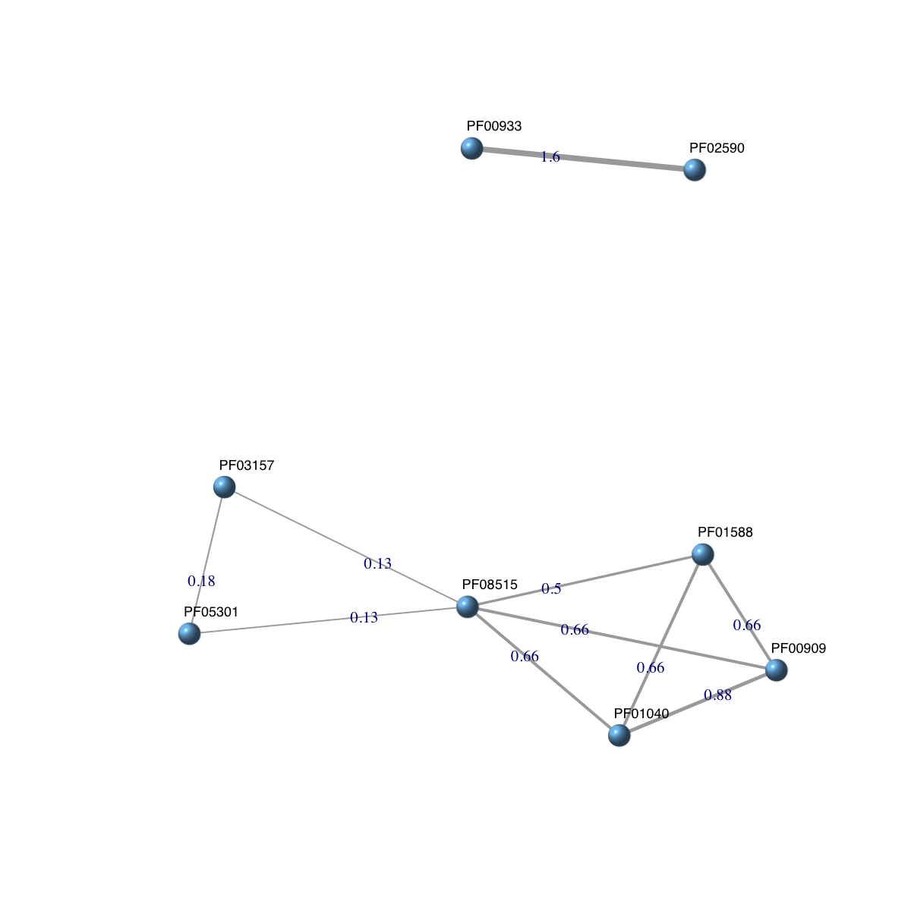
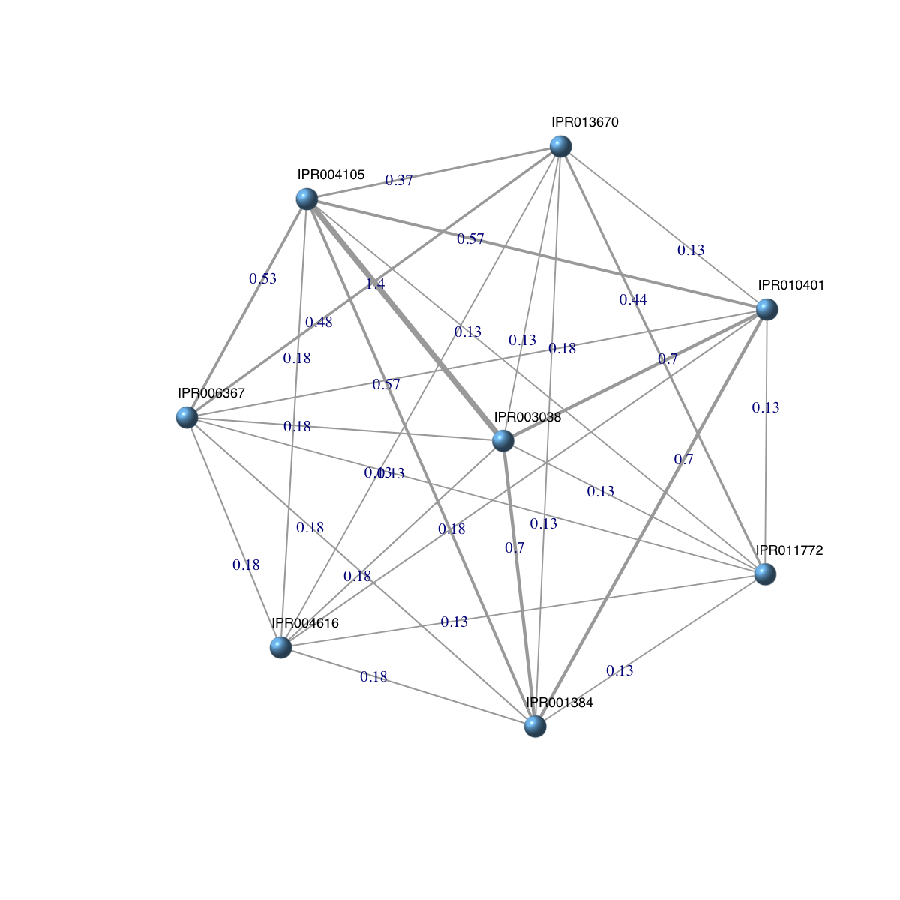
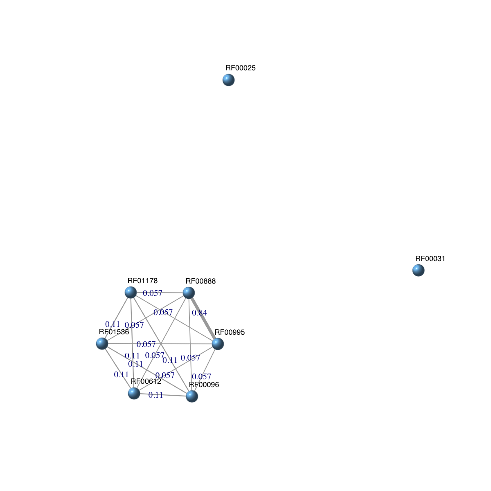
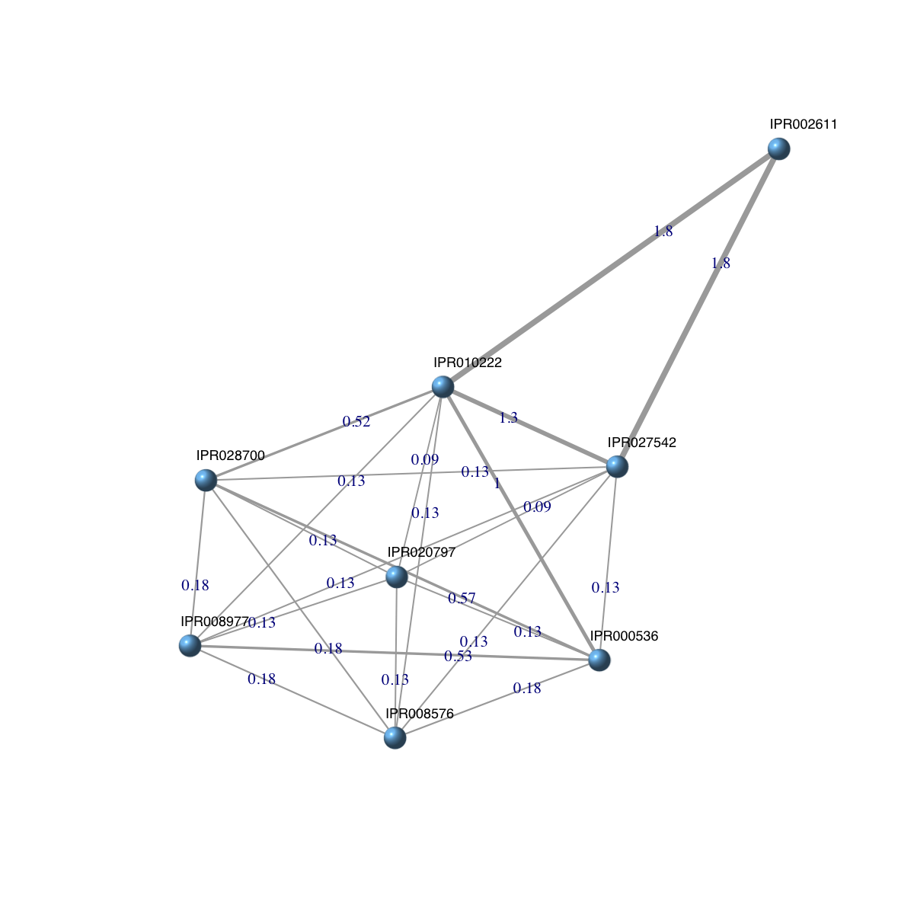

dcDAGdomainSim is supposed to calculate pair-wise semantic
similarity between domains based on a direct acyclic graph (DAG) with
annotated data. It first calculates semantic similarity between terms
and then derives semantic similarity between domains from terms-term
semantic similarity. Parallel computing is also supported for Linux or
Mac operating systems.
dcDAGdomainSim(g, domains = NULL, method.domain = c("BM.average", "BM.max", "BM.complete",
"average", "max"), method.term = c("Resnik", "Lin", "Schlicker", "Jiang", "Pesquita"),
force = TRUE, fast = TRUE, parallel = TRUE, multicores = NULL, verbose = TRUE)
Onto. It must
contain a node attribute called 'annotations' for storing annotation
data (see example for howto)dcDAGannotate)source("http://bioconductor.org/biocLite.R");
biocLite(c("foreach","doMC")). If not yet installed, this option will
be disabledan object of S4 class Dnetwork. It is a weighted and
undirect graph, with following slots:
nodeInfo: an object of S4 class, describing information on
nodes/domains
adjMatrix: an object of S4 class AdjData,
containing symmetric adjacency data matrix for pair-wise semantic
similarity between domains
For the mode "shortest_paths", the induced subgraph is the most concise, and thus informative for visualisation when there are many nodes in query, while the mode "all_paths" results in the complete subgraph.
# 1) Semantic similarity between SCOP domain superfamilies (sf) ## 1a) load onto.GOMF (as 'Onto' object) g <- dcRDataLoader('onto.GOMF')'onto.GOMF' (from package 'dcGOR' version 1.0.5) has been loaded into the working environment## 1b) load SCOP superfamilies annotated by GOMF (as 'Anno' object) Anno <- dcRDataLoader('SCOP.sf2GOMF')'SCOP.sf2GOMF' (from package 'dcGOR' version 1.0.5) has been loaded into the working environment## 1c) prepare for ontology appended with annotation information dag <- dcDAGannotate(g, annotations=Anno, path.mode="shortest_paths", verbose=FALSE) ## 1d) calculate pair-wise semantic similarity between 8 randomly chosen domains alldomains <- unique(unlist(nInfo(dag)$annotations)) domains <- sample(alldomains,8) dnetwork <- dcDAGdomainSim(g=dag, domains=domains, method.domain="BM.average", method.term="Resnik", parallel=FALSE, verbose=TRUE)Start at 2015-07-23 12:48:32 First, extract all annotatable domains (2015-07-23 12:48:32)... there are 8 input domains amongst 1083 annotatable domains Second, pre-compute semantic similarity between 93 terms (forced to be the most specific for each domain) using Resnik method (2015-07-23 12:48:39)... Last, calculate pair-wise semantic similarity between 8 domains using BM.average method (2015-07-23 12:48:43)... 1 out of 8 (2015-07-23 12:48:43) 2 out of 8 (2015-07-23 12:48:43) 3 out of 8 (2015-07-23 12:48:43) 4 out of 8 (2015-07-23 12:48:43) 5 out of 8 (2015-07-23 12:48:43) 6 out of 8 (2015-07-23 12:48:43) 7 out of 8 (2015-07-23 12:48:43) Finish at 2015-07-23 12:48:43 Runtime in total is: 11 secsdnetworkAn object of S4 class 'Dnetwork' @adjMatrix: a weighted symmetric matrix of 8 domains X 8 domains @nodeInfo (InfoDataFrame) nodeNames: 140741 81878 55608 ... 161070 56542 (8 total) nodeAttr: id## 1e) convert it to an object of class 'igraph' ig <- dcConverter(dnetwork, from='Dnetwork', to='igraph')Your input object 'dnetwork' of class 'Dnetwork' has been converted into an object of class 'igraph'.igIGRAPH UNW- 8 28 -- + attr: name (v/c), id (v/c), weight (e/n) + edges (vertex names): [1] 140741--81878 140741--55608 81878 --55608 140741--51658 81878 --51658 [6] 55608 --51658 140741--161084 81878 --161084 55608 --161084 51658 --161084 [11] 140741--54593 81878 --54593 55608 --54593 51658 --54593 161084--54593 [16] 140741--161070 81878 --161070 55608 --161070 51658 --161070 161084--161070 [21] 54593 --161070 140741--56542 81878 --56542 55608 --56542 51658 --56542 [26] 161084--56542 54593 --56542 161070--56542## 1f) visualise the domain network ### extract edge weight (with 2-digit precision) x <- signif(E(ig)$weight, digits=2) ### rescale into an interval [1,4] as edge width edge.width <- 1 + (x-min(x))/(max(x)-min(x))*3 ### do visualisation dnet::visNet(g=ig, vertex.shape="sphere", edge.width=edge.width, edge.label=x, edge.label.cex=0.7)########################################################### # 2) Semantic similarity between Pfam domains (Pfam) ## 2a) load onto.GOMF (as 'Onto' object) g <- dcRDataLoader('onto.GOMF')'onto.GOMF' (from package 'dcGOR' version 1.0.5) has been loaded into the working environment## 2b) load Pfam domains annotated by GOMF (as 'Anno' object) Anno <- dcRDataLoader('Pfam2GOMF')'Pfam2GOMF' (from package 'dcGOR' version 1.0.5) has been loaded into the working environment## 2c) prepare for ontology appended with annotation information dag <- dcDAGannotate(g, annotations=Anno, path.mode="shortest_paths", verbose=FALSE) ## 2d) calculate pair-wise semantic similarity between 8 randomly chosen domains alldomains <- unique(unlist(nInfo(dag)$annotations)) domains <- sample(alldomains,8) dnetwork <- dcDAGdomainSim(g=dag, domains=domains, method.domain="BM.average", method.term="Resnik", parallel=FALSE, verbose=TRUE)Start at 2015-07-23 12:49:02 First, extract all annotatable domains (2015-07-23 12:49:02)... there are 8 input domains amongst 3359 annotatable domains Second, pre-compute semantic similarity between 9 terms (forced to be the most specific for each domain) using Resnik method (2015-07-23 12:49:02)... Last, calculate pair-wise semantic similarity between 8 domains using BM.average method (2015-07-23 12:49:02)... 1 out of 8 (2015-07-23 12:49:02) 2 out of 8 (2015-07-23 12:49:02) 3 out of 8 (2015-07-23 12:49:02) 4 out of 8 (2015-07-23 12:49:02) 5 out of 8 (2015-07-23 12:49:02) 6 out of 8 (2015-07-23 12:49:02) 7 out of 8 (2015-07-23 12:49:02) Finish at 2015-07-23 12:49:02 Runtime in total is: 0 secsdnetworkAn object of S4 class 'Dnetwork' @adjMatrix: a weighted symmetric matrix of 8 domains X 8 domains @nodeInfo (InfoDataFrame) nodeNames: PF01588 PF01040 PF03157 ... PF05301 PF08515 (8 total) nodeAttr: id## 2e) convert it to an object of class 'igraph' ig <- dcConverter(dnetwork, from='Dnetwork', to='igraph')Your input object 'dnetwork' of class 'Dnetwork' has been converted into an object of class 'igraph'.igIGRAPH UNW- 8 10 -- + attr: name (v/c), id (v/c), weight (e/n) + edges (vertex names): [1] PF01588--PF01040 PF02590--PF00933 PF01588--PF00909 PF01040--PF00909 [5] PF03157--PF05301 PF01588--PF08515 PF01040--PF08515 PF03157--PF08515 [9] PF00909--PF08515 PF05301--PF08515## 2f) visualise the domain network ### extract edge weight (with 2-digit precision) x <- signif(E(ig)$weight, digits=2) ### rescale into an interval [1,4] as edge width edge.width <- 1 + (x-min(x))/(max(x)-min(x))*3 ### do visualisation dnet::visNet(g=ig, vertex.shape="sphere", edge.width=edge.width, edge.label=x, edge.label.cex=0.7)########################################################### # 3) Semantic similarity between InterPro domains (InterPro) ## 3a) load onto.GOMF (as 'Onto' object) g <- dcRDataLoader('onto.GOMF')'onto.GOMF' (from package 'dcGOR' version 1.0.5) has been loaded into the working environment## 3b) load InterPro domains annotated by GOMF (as 'Anno' object) Anno <- dcRDataLoader('InterPro2GOMF')'InterPro2GOMF' (from package 'dcGOR' version 1.0.5) has been loaded into the working environment## 3c) prepare for ontology appended with annotation information dag <- dcDAGannotate(g, annotations=Anno, path.mode="shortest_paths", verbose=FALSE) ## 3d) calculate pair-wise semantic similarity between 8 randomly chosen domains alldomains <- unique(unlist(nInfo(dag)$annotations)) domains <- sample(alldomains,8) dnetwork <- dcDAGdomainSim(g=dag, domains=domains, method.domain="BM.average", method.term="Resnik", parallel=FALSE, verbose=TRUE)Start at 2015-07-23 12:49:31 First, extract all annotatable domains (2015-07-23 12:49:31)... there are 8 input domains amongst 8899 annotatable domains Second, pre-compute semantic similarity between 12 terms (forced to be the most specific for each domain) using Resnik method (2015-07-23 12:49:33)... Last, calculate pair-wise semantic similarity between 8 domains using BM.average method (2015-07-23 12:49:33)... 1 out of 8 (2015-07-23 12:49:33) 2 out of 8 (2015-07-23 12:49:33) 3 out of 8 (2015-07-23 12:49:33) 4 out of 8 (2015-07-23 12:49:33) 5 out of 8 (2015-07-23 12:49:33) 6 out of 8 (2015-07-23 12:49:33) 7 out of 8 (2015-07-23 12:49:33) Finish at 2015-07-23 12:49:34 Runtime in total is: 3 secsdnetworkAn object of S4 class 'Dnetwork' @adjMatrix: a weighted symmetric matrix of 8 domains X 8 domains @nodeInfo (InfoDataFrame) nodeNames: IPR011772 IPR013670 IPR001384 ... IPR004616 IPR004105 (8 total) nodeAttr: id## 3e) convert it to an object of class 'igraph' ig <- dcConverter(dnetwork, from='Dnetwork', to='igraph')Your input object 'dnetwork' of class 'Dnetwork' has been converted into an object of class 'igraph'.igIGRAPH UNW- 8 28 -- + attr: name (v/c), id (v/c), weight (e/n) + edges (vertex names): [1] IPR011772--IPR013670 IPR011772--IPR001384 IPR013670--IPR001384 [4] IPR011772--IPR003038 IPR013670--IPR003038 IPR001384--IPR003038 [7] IPR011772--IPR006367 IPR013670--IPR006367 IPR001384--IPR006367 [10] IPR003038--IPR006367 IPR011772--IPR010401 IPR013670--IPR010401 [13] IPR001384--IPR010401 IPR003038--IPR010401 IPR006367--IPR010401 [16] IPR011772--IPR004616 IPR013670--IPR004616 IPR001384--IPR004616 [19] IPR003038--IPR004616 IPR006367--IPR004616 IPR010401--IPR004616 [22] IPR011772--IPR004105 IPR013670--IPR004105 IPR001384--IPR004105 + ... omitted several edges## 3f) visualise the domain network ### extract edge weight (with 2-digit precision) x <- signif(E(ig)$weight, digits=2) ### rescale into an interval [1,4] as edge width edge.width <- 1 + (x-min(x))/(max(x)-min(x))*3 ### do visualisation dnet::visNet(g=ig, vertex.shape="sphere", edge.width=edge.width, edge.label=x, edge.label.cex=0.7)########################################################### # 4) Semantic similarity between Rfam RNA families (Rfam) ## 4a) load onto.GOBP (as 'Onto' object) g <- dcRDataLoader('onto.GOBP')'onto.GOBP' (from package 'dcGOR' version 1.0.5) has been loaded into the working environment## 4b) load Rfam families annotated by GOBP (as 'Anno' object) Anno <- dcRDataLoader('Rfam2GOBP')'Rfam2GOBP' (from package 'dcGOR' version 1.0.5) has been loaded into the working environment## 4c) prepare for ontology appended with annotation information dag <- dcDAGannotate(g, annotations=Anno, path.mode="shortest_paths", verbose=FALSE) ## 4d) calculate pair-wise semantic similarity between 8 randomly chosen RNAs alldomains <- unique(unlist(nInfo(dag)$annotations)) domains <- sample(alldomains,8) dnetwork <- dcDAGdomainSim(g=dag, domains=domains, method.domain="BM.average", method.term="Resnik", parallel=FALSE, verbose=TRUE)Start at 2015-07-23 12:50:17 First, extract all annotatable domains (2015-07-23 12:50:17)... there are 8 input domains amongst 1377 annotatable domains Second, pre-compute semantic similarity between 4 terms (forced to be the most specific for each domain) using Resnik method (2015-07-23 12:50:17)... Last, calculate pair-wise semantic similarity between 8 domains using BM.average method (2015-07-23 12:50:17)... 1 out of 8 (2015-07-23 12:50:17) 2 out of 8 (2015-07-23 12:50:17) 3 out of 8 (2015-07-23 12:50:17) 4 out of 8 (2015-07-23 12:50:17) 5 out of 8 (2015-07-23 12:50:17) 6 out of 8 (2015-07-23 12:50:17) 7 out of 8 (2015-07-23 12:50:17) Finish at 2015-07-23 12:50:17 Runtime in total is: 0 secsdnetworkAn object of S4 class 'Dnetwork' @adjMatrix: a weighted symmetric matrix of 8 domains X 8 domains @nodeInfo (InfoDataFrame) nodeNames: RF00995 RF00031 RF00888 ... RF00612 RF00025 (8 total) nodeAttr: id## 4e) convert it to an object of class 'igraph' ig <- dcConverter(dnetwork, from='Dnetwork', to='igraph')Your input object 'dnetwork' of class 'Dnetwork' has been converted into an object of class 'igraph'.igIGRAPH UNW- 8 15 -- + attr: name (v/c), id (v/c), weight (e/n) + edges (vertex names): [1] RF00995--RF00888 RF00995--RF01178 RF00888--RF01178 RF00995--RF00096 [5] RF00888--RF00096 RF01178--RF00096 RF00995--RF01536 RF00888--RF01536 [9] RF01178--RF01536 RF00096--RF01536 RF00995--RF00612 RF00888--RF00612 [13] RF01178--RF00612 RF00096--RF00612 RF01536--RF00612## 4f) visualise the domain network ### extract edge weight (with 2-digit precision) x <- signif(E(ig)$weight, digits=2) ### rescale into an interval [1,4] as edge width edge.width <- 1 + (x-min(x))/(max(x)-min(x))*3 ### do visualisation dnet::visNet(g=ig, vertex.shape="sphere", edge.width=edge.width, edge.label=x, edge.label.cex=0.7)########################################################### # 5) Advanced usage: customised data for ontology and annotations # 5a) customise ontology g <- dcBuildOnto(relations.file="http://dcgor.r-forge.r-project.org/data/onto/igraph_GOMF_edges.txt", nodes.file="http://dcgor.r-forge.r-project.org/data/onto/igraph_GOMF_nodes.txt", output.file="ontology.RData")An object of S4 class 'Onto' has been built and saved into '/Users/hfang/Sites/SUPERFAMILY/dcGO/dcGOR/ontology.RData'.# 5b) customise Anno Anno <- dcBuildAnno(domain_info.file="http://dcgor.r-forge.r-project.org/data/InterPro/InterPro.txt", term_info.file="http://dcgor.r-forge.r-project.org/data/InterPro/GO.txt", association.file="http://dcgor.r-forge.r-project.org/data/InterPro/Domain2GOMF.txt", output.file="annotations.RData")An object of S4 class 'Anno' has been built and saved into '/Users/hfang/Sites/SUPERFAMILY/dcGO/dcGOR/annotations.RData'.## 5c) prepare for ontology appended with annotation information dag <- dcDAGannotate(g, annotations=Anno, path.mode="shortest_paths", verbose=FALSE) ## 5d) calculate pair-wise semantic similarity between 8 randomly chosen domains alldomains <- unique(unlist(nInfo(dag)$annotations)) domains <- sample(alldomains,8) dnetwork <- dcDAGdomainSim(g=dag, domains=domains, method.domain="BM.average", method.term="Resnik", parallel=FALSE, verbose=TRUE)Start at 2015-07-23 12:50:47 First, extract all annotatable domains (2015-07-23 12:50:47)... there are 8 input domains amongst 8899 annotatable domains Second, pre-compute semantic similarity between 10 terms (forced to be the most specific for each domain) using Resnik method (2015-07-23 12:50:48)... Last, calculate pair-wise semantic similarity between 8 domains using BM.average method (2015-07-23 12:50:49)... 1 out of 8 (2015-07-23 12:50:49) 2 out of 8 (2015-07-23 12:50:49) 3 out of 8 (2015-07-23 12:50:49) 4 out of 8 (2015-07-23 12:50:49) 5 out of 8 (2015-07-23 12:50:49) 6 out of 8 (2015-07-23 12:50:49) 7 out of 8 (2015-07-23 12:50:49) Finish at 2015-07-23 12:50:50 Runtime in total is: 3 secsdnetworkAn object of S4 class 'Dnetwork' @adjMatrix: a weighted symmetric matrix of 8 domains X 8 domains @nodeInfo (InfoDataFrame) nodeNames: IPR028700 IPR020797 IPR027542 ... IPR010222 IPR002611 (8 total) nodeAttr: id## 5e) convert it to an object of class 'igraph' ig <- dcConverter(dnetwork, from='Dnetwork', to='igraph')Your input object 'dnetwork' of class 'Dnetwork' has been converted into an object of class 'igraph'.igIGRAPH UNW- 8 23 -- + attr: name (v/c), id (v/c), weight (e/n) + edges (vertex names): [1] IPR028700--IPR020797 IPR028700--IPR027542 IPR020797--IPR027542 [4] IPR028700--IPR008576 IPR020797--IPR008576 IPR027542--IPR008576 [7] IPR028700--IPR008977 IPR020797--IPR008977 IPR027542--IPR008977 [10] IPR008576--IPR008977 IPR028700--IPR000536 IPR020797--IPR000536 [13] IPR027542--IPR000536 IPR008576--IPR000536 IPR008977--IPR000536 [16] IPR028700--IPR010222 IPR020797--IPR010222 IPR027542--IPR010222 [19] IPR008576--IPR010222 IPR008977--IPR010222 IPR000536--IPR010222 [22] IPR027542--IPR002611 IPR010222--IPR002611## 5f) visualise the domain network ### extract edge weight (with 2-digit precision) x <- signif(E(ig)$weight, digits=2) ### rescale into an interval [1,4] as edge width edge.width <- 1 + (x-min(x))/(max(x)-min(x))*3 ### do visualisation dnet::visNet(g=ig, vertex.shape="sphere", edge.width=edge.width, edge.label=x, edge.label.cex=0.7)
dcDAGdomainSim.r
dcDAGdomainSim.Rd
dcDAGdomainSim.pdf
dcRDataLoader, dcDAGannotate,
dcConverter, Dnetwork-class
){kind=link}
){kind=link}
){kind=link}
){kind=link}
){kind=link}